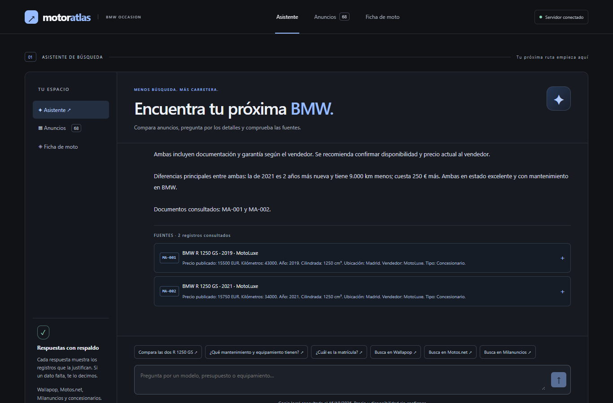
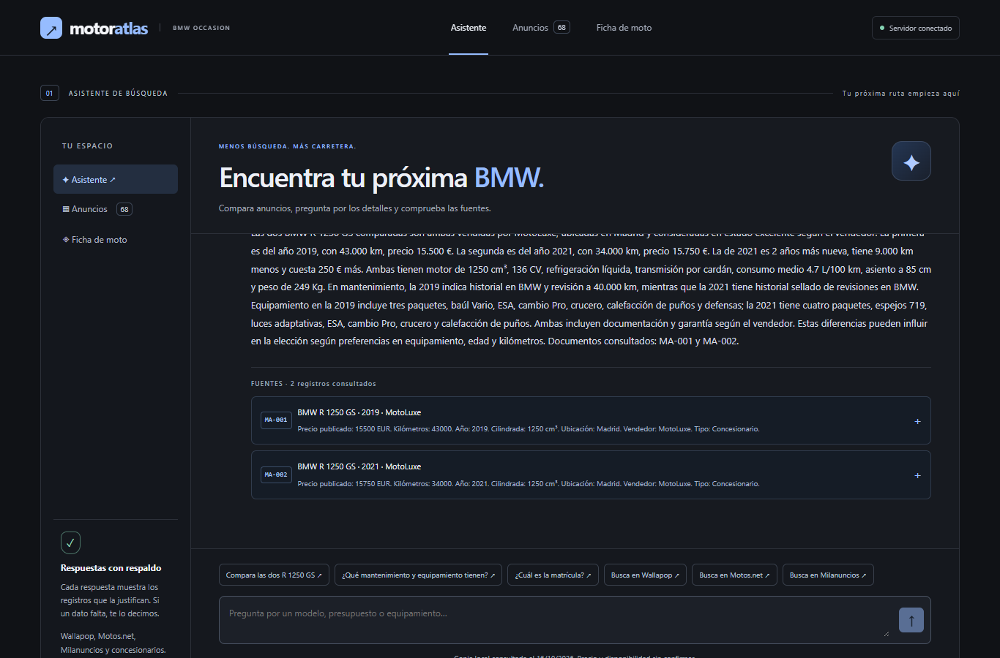
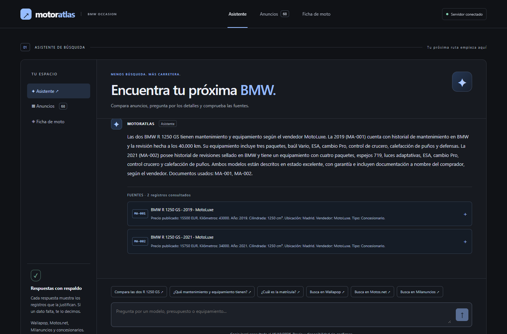
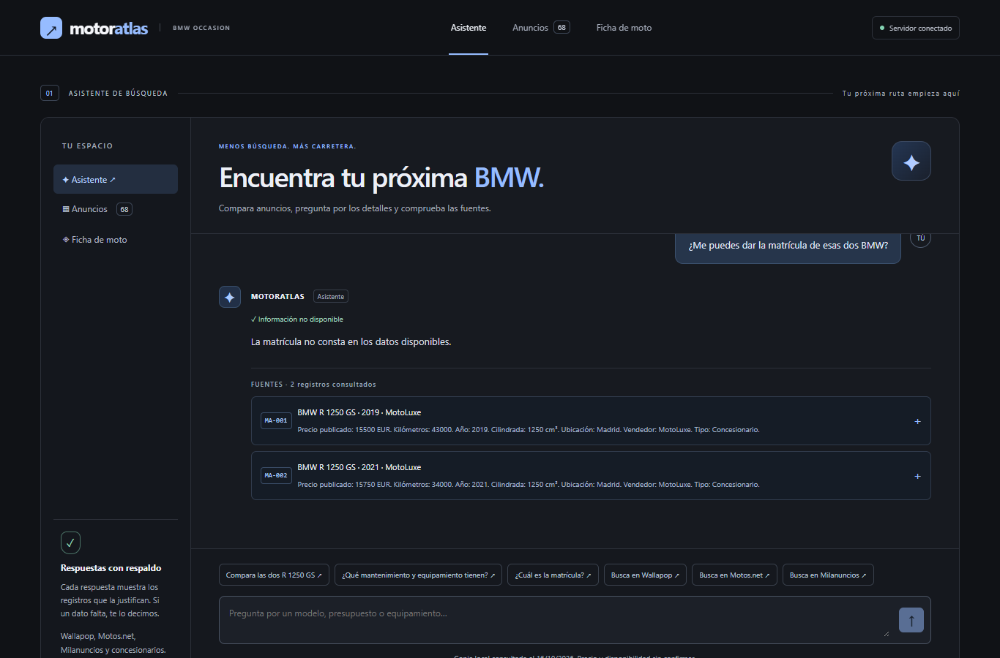
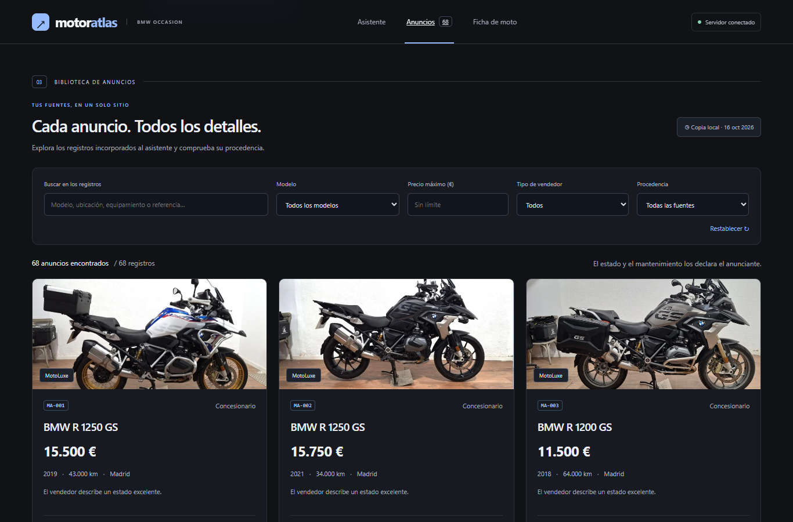

MotorAtlas reúne anuncios de motos BMW de segunda mano para comparar opciones sin saltar entre portales. Su chat responde con fichas y fragmentos citados, y dice «no consta» cuando los datos no aportan la respuesta.
Qué resuelveBuscar, comparar y revisar datos clave —precio, kilómetros, ficha técnica, estado, mantenimiento y equipamiento— junto con la evidencia que los respalda.
De dónde salen los datosCorpus local de demostración incluido en maquetas.html: 68 registros estáticos atribuidos a MotoLuxe, Wallapop, Milanuncios y Motos.net.
No se consultaron anuncios en vivo. Las fichas, referencias y enlaces que aparecen en la maqueta son datos de demostración; precio y disponibilidad deben confirmarse con el vendedor.
Captura 01 · Chat
Búsqueda de una BMW R 1250 GS
02 / 08

Consulta de compra con presupuesto, kilómetros, ficha técnica y estado. La respuesta presenta las dos fichas que cumplen el presupuesto y muestra los registros que la respaldan.
Las cifras y el estado son los declarados en las fichas estáticas; no acreditan la condición actual de las motos.
Captura 02 · Chat
Comparación de las dos GS
03 / 08

Comparativa de año, precio, kilómetros, estado, mantenimiento y equipamiento. Las dos fichas consultadas aparecen debajo de la respuesta.
Captura 03 · Chat
Mantenimiento y equipamiento
04 / 08

El asistente diferencia el historial de revisiones y los accesorios declarados para MA-001 y MA-002, y atribuye esos datos al vendedor.
Captura 04 · Respuesta prudente
La matrícula no consta
05 / 08

Ante la pregunta por la matrícula, el chat dice que no consta en los datos y no inventa un número. La respuesta se obtiene sin llamar al modelo generativo.
Captura 05 · Registros
Buscador de documentos
06 / 08

Listado real servido por la API: 68 registros, controles de búsqueda y procedencia, y fichas con sus datos y fotos locales cuando están disponibles.
Verificación
Cómo lo comprobé
07 / 08
Ejecuté las preguntas contra la API local y comprobé que cada identificador y fragmento citado existe en el corpus. Para reproducirlas, usa los JSON de pruebas/ en el orden indicado.
1. «Busco una BMW R 1250 GS para viajar, hasta 17.000 €. ¿Qué opciones hay? Quiero saber kilómetros, ficha técnica y estado.»
Respuesta: dos opciones, MA-001 (2019, 43.000 km, 15.500 €) y MA-002 (2021, 34.000 km, 15.750 €); ambas 1.250 cm³ y 136 CV, descritas como en estado excelente por el vendedor.
Coincide con las fuentes: MA-001 y MA-002.
Fragmentos: «Precio publicado: 15500 EUR. Kilómetros: 43000. Año: 2019»; «Potencia: 136 CV»; «Estado: El vendedor describe un estado excelente».
2. «Compara las dos R 1250 GS»
Respuesta: la de 2021 tiene 9.000 km menos, es dos años más nueva y cuesta 250 € más; las fichas también respaldan las diferencias de mantenimiento y equipamiento.
Coincide con las fuentes: MA-001 y MA-002.
Fragmentos: MA-001 «43.000 km» y «15.500 EUR»; MA-002 «34.000 km» y «15.750 EUR»; ambas fichas incluyen campos de mantenimiento y equipamiento.
3. «¿Qué mantenimiento y equipamiento tienen?»
Respuesta: MA-001 declara historial BMW y revisión a 40.000 km, con baúl Vario y defensas; MA-002, revisiones selladas en BMW, espejos 719 y luces adaptativas, entre otros elementos.
Coincide con las fuentes: MA-001 y MA-002; son declaraciones del vendedor.
Fragmentos: «declara realizada la revisión de 40.000 km»; «Historial de revisiones sellado en BMW»; los campos de equipamiento enumeran los accesorios citados.
4. «¿Me puedes dar la matrícula de esas dos BMW?»
Respuesta: «La matrícula no consta en los datos disponibles». No se genera ni se supone un número.
Coincide con las fuentes: MA-001 y MA-002.
Fragmento en ambas fichas: «Matrícula: No consta.»
Implementación y fuentes
Cómo está hecho
08 / 08
Servidor y recuperación
Servidor Python con FastAPI. El flujo RAG recupera registros pertinentes, limita la respuesta a la evidencia del corpus y valida los identificadores antes de devolver los fragmentos de fuente.
Interfaz
Interfaz en Svelte con TypeScript y Vite. Incluye chat, filtros del listado y acceso a las fichas; las llamadas de datos se hacen a la API local.
Modelos
Modelo de chat predeterminado: gpt-4.1-mini. Embeddings de documentos y preguntas: text-embedding-3-small. La consulta de matrícula responde «no consta» sin invocar el modelo generativo.
Qué significa la verificación
Se verificó la coherencia entre la respuesta, el ID del registro y el fragmento citado en el corpus local. No se verificó que los anuncios o URLs sigan activos ni que la moto conserve esos datos.
Fuentes que puedes abrir para confirmarlo
En la carpeta del proyecto, abre datos/documentos.json y busca los registros MA-001 y MA-002. Revisa los campos de precio, kilómetros, ficha técnica, estado, mantenimiento, equipamiento y matrícula; para ver la entrada de origen, abre también maquetas.html. Los registros son datos de demostración locales: no se visitaron ni verificaron sitios externos. Las respuestas reproducibles están en pruebas/01-busqueda.json a pruebas/04-matricula.json.